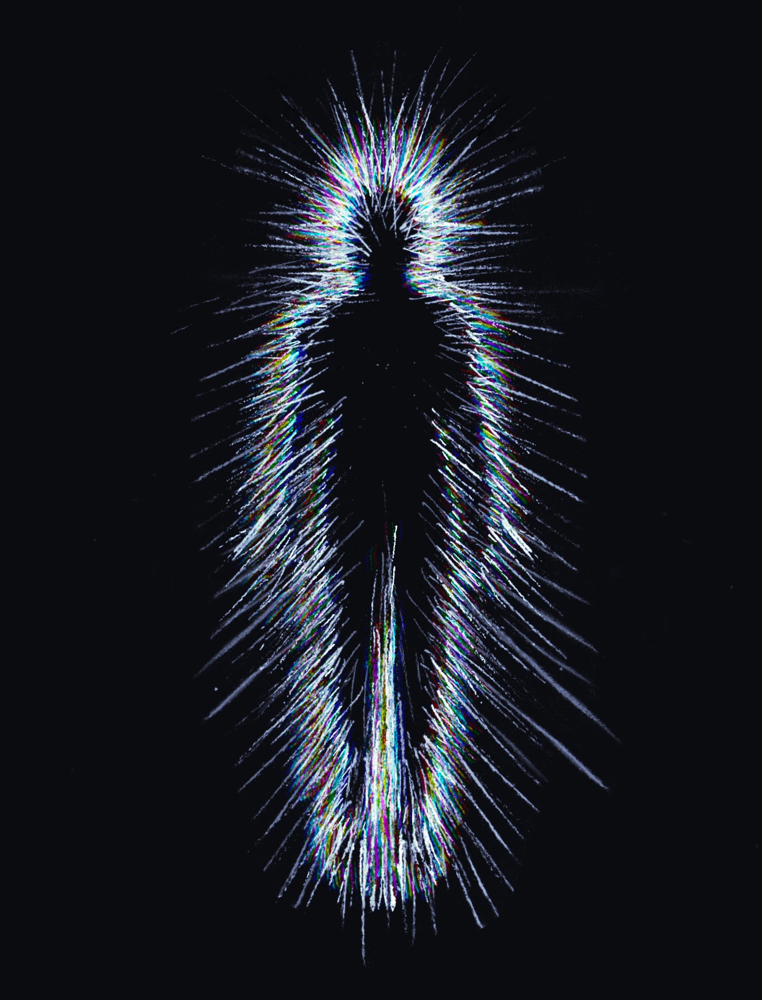
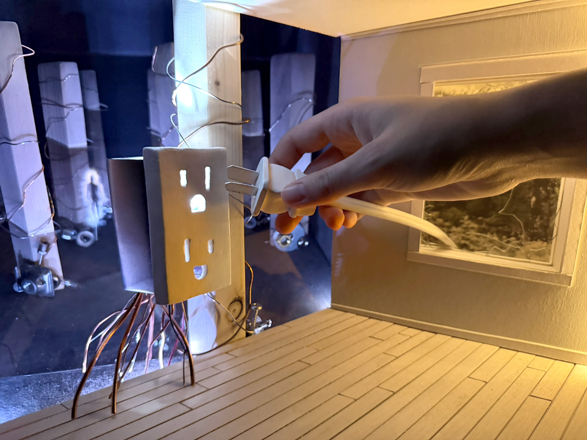
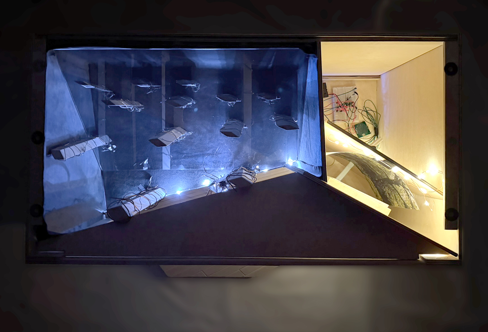
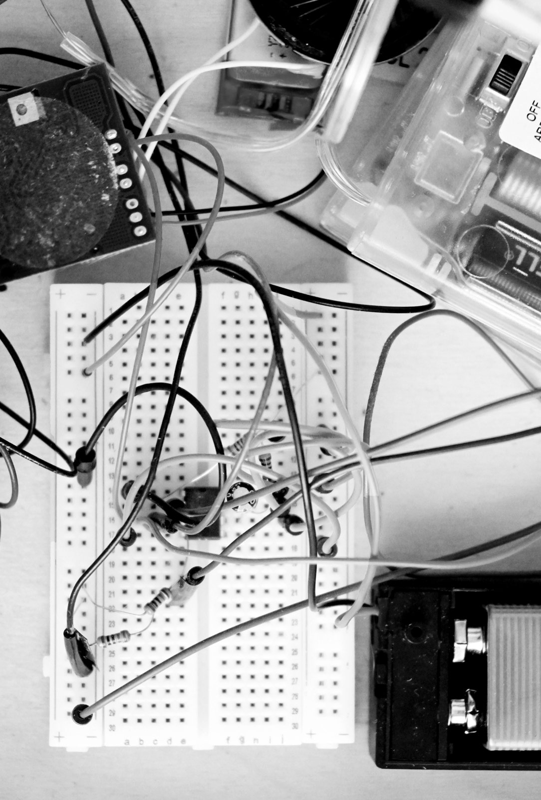
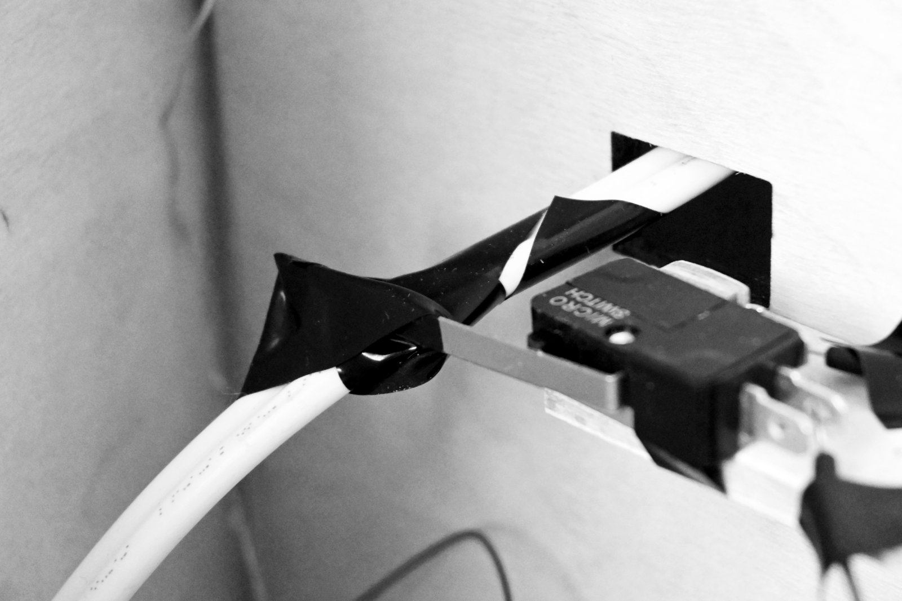

In the Realm of Volt and Ohm
I live in the liminal places, between stud and drywall, my body a field you cannot see but might, if the light hits right, detect as a shimmer, a spark, or a slight distortion of space.
I watch you through the wall, extending a cable towards me. When your fingers near the mouth of my outlet, I cannot help myself. I reach, stretching forth to defend my territory. Through the barrier that keeps us separate, piercing the thin veil. There is contact, and just for a millisecond, you become part of me.
In that flash, you see my world: the towering stud-broken halls, the blackness between walls. Every wire is a fiber of my nervous system, every breaker a valve in my humming and clicking heart. Your hair stands on end. Your muscles clench. For one bright instant, you are in here with me, and I am out there with you.
You curse and examine your finger. I retreat into my realm of volt and ohm, neither sorry nor satisfied, only fulfilling my nature, which is to be everywhere electricity goes, to radiate, to reach, to occasionally breach the treaty between your world and mine.
I am the presence you sense when the house is too quiet, the thing that animates your home, making it breathe light and heat. When you leave, I stay. When you sleep, I hum.
And sometimes, when you reach to plug something in, I reach back.
Medium: graphite on layers of vellum, inverted

The diorama houses an electrical spirit, The Conductor, utilizing theatre techniques of forced perspective and the Pepper's Ghost illusion, coupled with an interactive pull cord, to immerse the viewer in the creature's domain. A screen mounted to the top panel of the diorama projects a hand-drawn animation of the spirit, teleporting and glitching around in the cavernous realm of the wall, onto an angled sheet of acrylic. When the cord is pulled, a series of visual, auditory, and tactile effects are triggered to simulate an electric shock. A light turns on in the mouth of the outlet, a speaker plays a zapping sound, and a vibrational motor housed in the polymer clay plug is activated.



